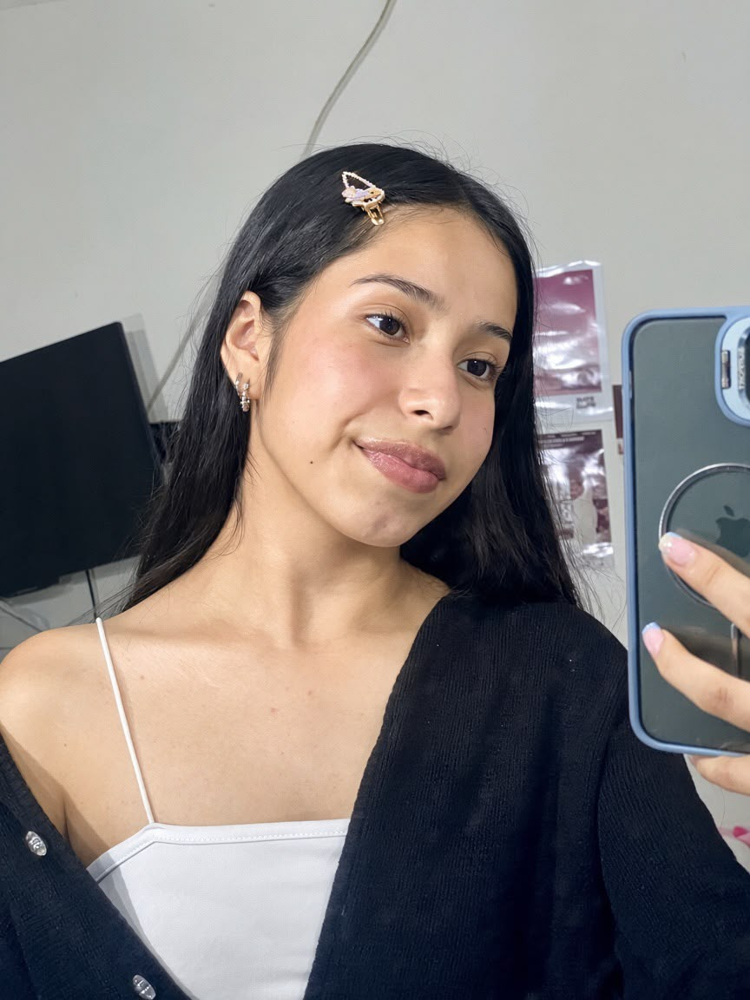

Un poco sobre mí
Sari Tatiana Giron
Presentacion Personal
Soy una persona que le llama mucho la atencion el cine, me gusta ver muchas series y peliculas, por lo general suelo dormir mucho y no me gusta despertarme temprano, me gusta mucho salir con mis amigas, mi mayor defecto es que suelo ser muy debil y constantemente voy al hospital, prefiero mil veces lo salado que lo dulce a exepcion de combinar helado con queso, mis colores favoritos por lo general son oscuros (azul,vino tinto,negro y blanco), me gusta dibujar y pintar, no suelo hablar mucho de mi en una primera impresion.
Mis aspiraciones educativas
Aspiro a terminar una carrera universitaria en el area de nutricion despues de terminar el colegio, posteriormente me gustaria aprender diseño de modas, diferentes idiomas como el ingles,frances, japones y otros idiomas mas (ser poliglota), tambien me gustaria estudiar artes y aprender a tocar diferentes instrumentos como el violin,piano,flauta y bateria.
Mis intereses tecnológicos
Mis intereses tecnologicos se basan mas que todo en aprender las diferentes funciones que puedo hacer con la tecnologia de hoy en dia, me gustaria en algun momento poder crear mi propia app o juego, tambien soy conciente que debo tener cierto de nivel de conocimiento en el ambito tecnologico ya que si mi trabajo a futuro o mi futuro en general lo requiere me seria muy util para mi estilo de vida.
Otros intereses
Los interes personales que tengo a futuro son poder viajar a diferentes partes del mundo,tener mi propia casa y poder sostenerme economicamente bien por mi propia cuenta; en la parte academica me gusria haber ganado mi titulo universitario e incluso haber realizado lo que mencione anteriormente (estudiar arte, diseño de modas, etc).